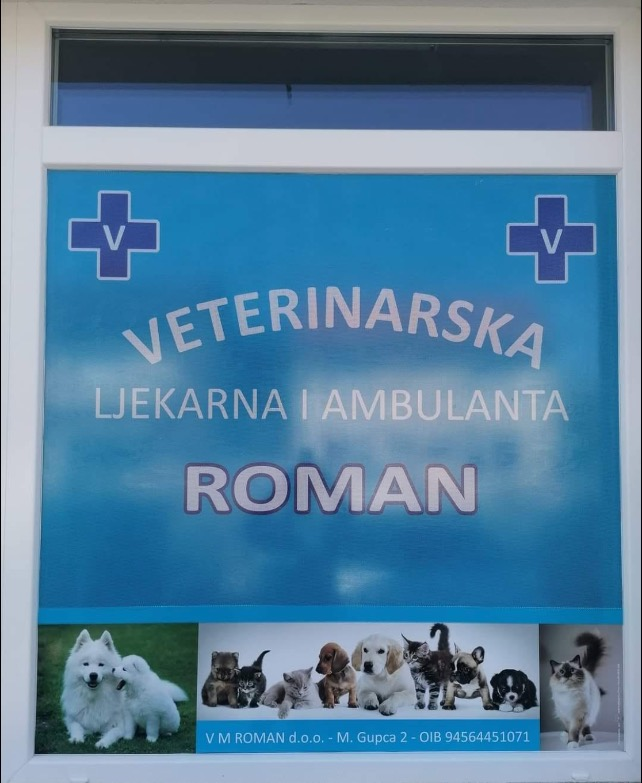

Pregled mesana trihinelu.
Kad se kolje svinja za vlastitu upotrebu, meso prije jela treba pregledati na trihinelu (Trichinella spiralis). U sezoni kolinja pregled radi Veterinarska ambulanta Roman u Đakovu, a ulaz je kroz veterinarsku ljekarnu.
15.11. – 23.12.
Sezona pregleda traje od 15. studenoga do 23. prosinca.
Ponedjeljak – subota
8 – 18 h
Nedjelja
8 – 12 h
Ulaz
Kroz veterinarsku ljekarnu, Matije Gupca 2
Radno vrijeme u sezoni prema obavijesti ambulante objavljenoj na Facebooku (studeni 2022.). Za tekuću sezonu potvrdite telefonom na 031 812 240 ili 098 437 989.
Od kolinja do nalaza
Koliko mesa i s kojeg dijela donijeti, recite nam kad nazovete – tako uzorak odmah bude kakav treba.
- 1
Nazovite
Javite se na 031 812 240 ili 098 437 989 i dogovorite kada donosite uzorak.
- 2
Uzmite uzorak
Uzorak mišića uzima se od svake zaklane svinje. Za pregled se najčešće koristi mišić ošita (dijafragme).
- 3
Uđite kroz ljekarnu
U sezoni kolinja ulaz za pregled mesa je kroz veterinarsku ljekarnu u Ulici Matije Gupca 2.
- 4
Pričekajte nalaz
Meso ne jedite i ne prerađujte dok ne dobijete nalaz pregleda.
Trihinela se ne vidi golim okom
Trihinela je sitni oblić čije se ličinke učahure u mišićima svinja, divljih svinja i drugih životinja. Čovjek se zarazi ako pojede sirovo ili nedovoljno termički obrađeno zaraženo meso, a bolest se zove trihineloza.
Zato se meso pregledava u laboratoriju, na uzorku mišića. Domaće kobasice, kulen i šunka suše se i dime, ali se ne kuhaju – pa pregled mesa vrijedi napraviti prije nego što meso ode u preradu.
